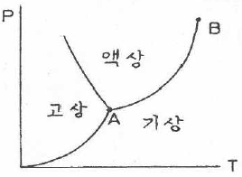
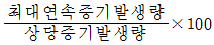
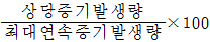
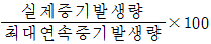
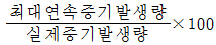

에너지관리산업기사 (2018-04-28 기출문제)
1과목: 열역학 및 연소관리
1. 전기식 집진장치의 특징에 관한 설명으로 틀린 것은?
- 집진효율이 90~99.5% 정도로 높다.
- 고전압장치 및 정전설비가 필요하다.
- 미세입자 처리도 가능하다.
- 압력손실이 크다.
(정답률: 88%)

2. 사이클론식 집진기는 어떤 성질을 이용한 것인가?
- 관성력
- 부력
- 원심력
- 중력
(정답률: 92%)
3. 냉동기에서의 성능계수 COPR 과 열펌프에서의 성능계수 COPH 와의 관계식으로 옳은 것은?
- COPR ＝COPH
- COPR ＝COPH ＋1
- COPR ＝COPH －1
- COPR ＝1－COPH
(정답률: 64%)
4. 그림은 P-T(압력-온도)선도상에서의 물의 상태도이다. 다음 설명 중 틀린 것은?

- A점을 삼중점이라 한다.
- B점을 임계점이라 한다.
- B점은 온도의 기준점으로 사용된다.
- 곡선 AB는 증발곡선을 표시한다.
(정답률: 85%)
5. 가스가 40kJ의 열량을 받음과 동시에 외부에 30kJ의 일을 했다. 이 때 이 가스의 내부에너지 변화량은?
- 10kJ 증가
- 10kJ 감소
- 70kJ 증가
- 70kJ 감소
(정답률: 76%)
6. 산소를 일정 체적하에서 온도를 27℃로부터 －3℃로 강하시켰을 경우 산소의 엔트로피(kJ/kgㆍK)의 변화는 얼마인가? (단, 산소의 정적비열은 0.654kJ/kgㆍK이다.)
- －0.0689
- 0.0689
- －0.⑤82
- 0.⑤82
(정답률: 59%)
7. 열역학 제1법칙과 가장 밀접한 관련이 있는 것은?
- 시스템의 에너지 보존
- 시스템의 열역학적 반응속도
- 시스템의 반응방향
- 시스템의 온도효과
(정답률: 91%)
8. 86보일러 마력에 60℃의 물을 공급하여 686.48kPa의 포화수증기를 제조한다. 보일러 효율이 72%이고, 연료 소비량이 100kg/h이라고 할 때, 이 연료의 저위 발열량(MJ/kg)은? (단, 686.48kPa 포화수증기의 엔탈피는 2.763MJ/kg 이다.)
- 31.31
- 36.54
- 42.18
- 45.39
(정답률: 43%)
9. 급수 중 용존하고 있는 O2, CO2 등의 용존 기체를 분리 제거하는 것을 무엇이라고 하는가?
- 폭기법
- 기폭법
- 탈기법
- 이온교환법
(정답률: 78%)
10. 탄소 0.87, 수소 0.1, 황 0.03의 연료가 있다. 과잉공기 50%를 공급할 경우 실제 건배기가스량(Nm3/kg)은?
- 8.89
- 9.94
- 10.5
- 15.19
(정답률: 43%)
11. 고체나 유체에서 서로 접하고 있는 물질의 구성분자 간에 정지상태에서 열에너지가 고온의 분자로부터 저온의 분자로 이동하는 현상을 무엇이라 하는가?
- 열전도
- 열관류
- 열발생
- 열전달
(정답률: 85%)
12. 어떤 온수보일러의 수두압이 30m일 때, 이 보일러에 가해지는 압력(kg/cm2)은?
- 0.3
- 3
- 3000
- 30000
(정답률: 70%)
13. 다음 중 기체 연료의 장점이 아닌 것은?
- 연소가 균일하고 연소조절이 용이하다.
- 회분이나 매연이 없어 청결하다.
- 저장이 용이하고 설비비가 저가이다.
- 연소효율이 높고 점화소화가 용이하다.
(정답률: 90%)
14. 열과 일에 대한 설명으로 틀린 것은?
- 모두 경계를 통해 일어나는 현상이다.
- 모두 경로함수이다.
- 모두 불완전 미분형을 갖는다.
- 모두 양수의 값을 갖는다.
(정답률: 79%)
15. 오일 버너 중 유량 조절범위가 1：10 정도로 크며, 가동 시 소음이 큰 버너는?
- 유압 분무식
- 회전 분무식
- 저압 공기식
- 고압 기류식
(정답률: 81%)
16. 디젤기관의 열효율은 압축비 ε, 차단비(또는 단절비) σ와 어떤 관계가 있는가?
- ε와 σ가 증가할수록 열효율이 커진다.
- ε와 σ가 감소할수록 열효율이 커진다.
- ε가 감소하고, σ가 증가할수록 열효율이 커진다.
- ε가 증가하고, σ가 감소할수록 열효율이 커진다.
(정답률: 78%)
17. 다음 중 석탄의 원소분석 방법이 아닌 것은?
- 리비히법
- 에쉬카법
- 라이트법
- 켈달법
(정답률: 68%)
18. 체적이 5.5m3인 기름의 무게가 4500kgf일 때 이 기름의 비중은?
- 1.82
- 0.82
- 0.63
- 0.55
(정답률: 68%)
19. 다음 중 열의 단위 1kcal와 다른 값은?
- 426.8kgfㆍm
- 1kWh
- 0.00158PSh
- 4.1855kJ
(정답률: 77%)
20. 보일러의 연소 온도에 직접적으로 영향을 미치는 인자로 가장 거리가 먼 것은?
- 산소의 농도
- 연료의 발열량
- 공기비
- 연료의 단위 중량
(정답률: 75%)
2과목: 계측 및 에너지진단
21. 다음 중 보일러 부하율(%)을 바르게 나타낸 것은?




(정답률: 68%)
22. 상당증발량(Ge, kg/hr)을 구하는 공식으로 맞는 것은? (단, G는 실제 증발량(kg/hr), h2는 발생증기의 엔탈피(kJ/kg), h1는 급수의 엔탈피(kJ/kg)이다.)
- Ge = G(h1-h2)/2256
- Ge = G(h2-h1)/2256
- Ge = G(h1-h2)/226
- Ge = G(h2-h1)/226
(정답률: 81%)
23. 절대단위계 및 중력 단위계에 대한 설명으로 옳은 것은?
- MKS단위계는 길이 (m),질량(kg), 시간(sec)을 기준으로 한다.
- 절대단위계는 질량(F), 길이(L), 시간(T)을 기준으로 한다.
- 중력단위계는 힘(F), 길이(k), 시간(sec)을 기준으로 한다.
- 기계공학 분야에는 중력단위를 사용해서는 안된다.
(정답률: 78%)
24. 아스팔트유, 윤활유, 절삭유 등 인화점 80℃ 이상의 석유제품의 인화점 측정에 사용하는 시험기는?
- 타그 밀폐식
- 타그 개방방식
- 클리블랜드 개방식
- 아벨펜스키 밀폐식
(정답률: 74%)
25. 다음 중 보일러 자동제어 장치의 종류로 가장 거리가 먼 것은?
- 연소제어
- 급수제어
- 급유제어
- 증기온도제어
(정답률: 66%)
26. 오르자트분석계에서 채취한 시료량 50cc 중 수산화칼륨 30% 용액에 흡수되고 남은 양이 41.8cc이었다면, 흡수된 가스의 원소와 그 비율은?
- O2, 16.4%
- CO2, 16.4%
- O2, 8.2%
- CO2, 8.2%
(정답률: 67%)
27. 상자성체이므로 자력을 이용하여 자기풍을 발생시켜 농도를 측정할 수 있는 기체는?
- 산소
- 수소
- 이산화탄소
- 메탄가스
(정답률: 71%)
28. 열전 온도계에 사용되는 보상도선에 대한 설명으로 옳은 것은?
- 열전대의 보호관 단자에서 냉접점 단자까지 사용하는 도선이다.
- 열전대를 기계적으로나 화학적으로 보호하기 위해서 사용한다.
- 열전대와 다른 특성을 가진 전선이다.
- 주로 백금과 마그네슘의 합금으로 만든다.
(정답률: 69%)
29. P동작의 비례이득이 4일 경우 비례대는 몇 % 인가?
- 20
- 25
- 30
- 40
(정답률: 81%)
30. 다음 중 용적식 유량계가 아닌 것은?
- 벤츄리식
- 오벌기어식
- 로터리피스톤식
- 루트식
(정답률: 66%)
31. 출력이 일정한 값에 도달한 이후의 제어계의 특성을 무엇이라고 하는가?
- 과도특성
- 스텝특성
- 정상특성
- 주파수응답
(정답률: 83%)
32. 다음 중 제어 계기의 공기압 신호의 압력 범위는 일반적으로 몇 kg/cm2인가?
- 0.01~0.⑤
- 0.06~0.1
- 0.2~1.0
- 2.0~5.0
(정답률: 73%)
33. 열정산에서 입열에 해당되는 것은?
- 공기의 현열
- 발생중기의 흡수열
- 배기가스의 손실열
- 방산에 의한 손실열
(정답률: 81%)
34. 다음 압력계 중 가장 높은 압력을 측정할 수 있는 것은?
- 다이아프램식 압력계
- 벨로우즈식 압력계
- 부르동관식 압력계
- U자관식 압력계
(정답률: 77%)
35. 다음 액면계에 대한 설명 중 옳지 않은 것은?
- 공기압을 이용하여 액면을 측정하는 액면계는 퍼지식 액면계이다.
- 고압 밀폐 탱크의 액면제어용으로 가장 많이 사용하는 것은 부자식 액면계이다.
- 기준 수위에서 압력과 측정액면에서의 압력차를 비교하여 액위를 측정하는 것은 차압식 액면계이다.
- 관내의 공기압과 액압이 같아지는 압력을 측정하여 액면의 높이를 측정하는 것은 정전용량식 액면계이다.
(정답률: 63%)
36. 다음 서미스터 저항온도계에 사용되는 서미스터 재질 중 가장 적절하지 않은 것은?
- 코발트
- 망간
- 니켈
- 크롬
(정답률: 69%)
37. 내유량의 측정에 적합하고, 비전도성 액체라도 유량 측정이 가능하며 도플러효과를 이용한 유량계는?
- 플로노즐유량계
- 벤류리유량계
- 임펠러유량계
- 초음파유량계
(정답률: 74%)
38. 다음 출열 항목 중 열손실이 가장 큰 것은?
- 방산에 의한 손실
- 배기가스에 의한 손실
- 불완전 연소에 의한 손실
- 노 내 분입 증기에 의한 손실
(정답률: 75%)
39. 다음 중 열량의 계량 단위가 아닌 것은?
- 주울(J)
- 와트(W)
- 와트초(WS)
- 칼로리 (kcal)
(정답률: 65%)
40. 다음 중 화학적 가스 분석계의 종류로 옳은 것은?
- 열전도율법
- 연소열법
- 도전율법
- 밀도법
(정답률: 75%)
3과목: 열설비구조 및 시공
41. 축열기(steam accumulator)를 설치했을 경우에 대한 설명으로 틀린 것은?
- 보일러 증기측에 설치하는 변압식과 보일러 급수측에 설치하는 정압식이 있다.
- 보일러 용량 부족으로 인한 증기의 과부족을 해소할 수 있다.
- 연료 소비량을 감소시킨다.
- 부하변동에 대한 압력변동이 발생한다.
(정답률: 67%)
42. 다음 중 무기질 보온재에 속하는 것은?
- 규산칼슘 보온재
- 양모 펠트 보온재
- 탄화 코르크 보온재
- 기포성 수지 보온재
(정답률: 74%)
43. T형 필렛 용접이음에서 모재의 두께를 h(mm), 하중을 W(kg), 용접길이를 ℓ(mm)이라 할 때 인장응력(kg/mm2)을 계산하는 식은?
- σ = W/0.707hℓ
- σ = Wℓ/0.707h
- σ = W/hℓ
- σ = 0.707W/hℓ
(정답률: 62%)
44. 에너지이용 합리화법에 따른 인정검사대상기기 조종자의 교육을 이수한 자의 조종 범위가 아닌 것은?
- 용량이 10t/h 이하인 보일러
- 압력용기
- 증기보일러로서 최고사용압력이 1MPa 이하이고,전열면적이 10m2 이하인 것
- 열매체를 가열하는 보일러로서 용량이 581.5kW 이하인 것
(정답률: 71%)
45. 보일러에서 보염장치를 설치하는 목적으로 가장 거리가 먼 것은?
- 연소 화염을 안정시킨다.
- 안정된 착화를 도모한다.
- 저공기비 연소를 가능하게 한다.
- 연소가스 체류 시간을 짧게 해 준다.
(정답률: 75%)
46. 가마를 사용하는데 있어 내용수명과의 관계가 가장 거리가 먼 것은?
- 가마 내의 부착물(휘발분 및 연료의 재)
- 피열물의 열용량
- 열처리 온도
- 온도의 급변
(정답률: 75%)
47. 강관 50A의 방향 전환을 위해 맞대기 용접식 롱 엘보 이음쇠를 사용하고자 한다. 강관 50A의 용접식 이음쇠인 롱 엘보의 곡률반경은? (단, 강관 50A의 호칭지름은 60mm로 한다.)
- 50mm
- 60mm
- 90mm
- 100mm
(정답률: 70%)
48. 보일러의 가용전(가용마개)에 사용되는 금속의 성분은?
- 납과 알루미늄의 합금
- 구리와 아연의 합금
- 납과 주석의 합금
- 구리와 주석의 합금
(정답률: 77%)
49. 영국에서 개발된 최초의 관류보일러로 수십 개의 수관을 병렬로 배치시킨 고압용 대용량 보일러는?
- 라몬트
- 스털링
- 벤슨
- 슐져
(정답률: 67%)
50. 다음 중 급수 중의 보일러 과열의 직접적인 원인이 될 수 있는 물질은?
- 탄산가스
- 수산화나트륨
- 히드라진
- 유지
(정답률: 71%)
51. 간접가열용 열매체 보일러 중 다우섬액을 사용하는 보일러 형식은?
- 레플러보일러
- 슈미트-하트만보일러
- 슐져보일러
- 라몬트보일러
(정답률: 72%)
52. 신축이음 중 온수 혹은 저압증기의 배관분기관 등에 사용되는 것으로 2개 이상의 엘보를 사용하여 나사맞춤부의 작용에 의하여 신축을 흡수하는 것은?
- 벨로즈 이음
- 슬리브 이음
- 스위블 이음
- 신축곡관
(정답률: 81%)
53. 압력배관용 강관의 인장강도가 24kg/mm2, 스케줄번호가 120일 때 이 강관의 사용압력(kgf/cm2)은? (단, 안전율은 4로 한다.)
- 96
- 72
- 60
- 24
(정답률: 62%)
54. 에너지이용 합리화법에 따라 검사면제를 위한 보험을 제조안전보험과 사용안전보험으로 구분할 때 제조안전보험의 요건이 아닌 것은?
- 검사대상기기의 설치와 관련된 위험을 담보할 것
- 연 1회 이상 검사기준에 따른 위험관리 서비스를 실시할 것
- 검사대상기기의 계속사용에 따른 재물 종합위험 및 기계위험을 담보할 것
- 검사대상기기의 제조상 하자와 관련된 제3자의 법률상 손해배상책임을 담보할 것
(정답률: 63%)
55. 다음 중 보일러의 급수설비에 속하지 않는 것은?
- 급수내관
- 응축수 탱크
- 인젝터
- 취출밸브
(정답률: 66%)
56. 화염의 이온화를 이용한 전기 전도성으로 화염의 유무를 검출하는 화염검출기는?
- 플래임 로드
- 플래임 아이
- 자외선 광전관
- 스택 스위치
(정답률: 74%)
57. 증발량 2000kg/h인 보일러의 상당증발량(kg/h)은? (단, 증기의 엔탈피는 600kcal/kg, 급수의 엔탈피는 30kcal/kg이다.)
- 1560kg/h
- 2115kg/h
- 2565kg/h
- 2890kg/h
(정답률: 59%)
58. 축열식 반사로를 사용하여 선철을 용해, 정련하는 방법으로 시멘스-마틴법(siemens-martins process)이 라고도 하는 것은?
- 불림로
- 용선로
- 평로
- 전로
(정답률: 64%)
59. 보일러 그을음 제거 장치인 수트블로워의 분사형식이 아닌 것은?
- 모래분사
- 물분사
- 공기분사
- 증기분사
(정답률: 75%)
60. 에너지이용 합리화법에서의 검사대상기기 계속사용검사에 관한 내용으로 틀린 것은?
- 검사대상기기 계속사용검사신청서는 검사유효기간 만료 10일전까지 제출하여야 한다.
- 검사유효기간 만료일이 9월 1일 이후인 경우에는 3개월 이내에서 계속사용검사를 연기할 수 있다.
- 검사대상기기 검사연기신청서는 한국에너지 공단이사장에게 제출하여야 한다.
- 검사대상기기 계속사용검사신청서에는 해당 검사기기 설치검사증 사본을 첨부하여야 한다.
(정답률: 78%)
4과목: 열설비취급 및 안전관리
61. 에너지이용 합리화법에 따라 에너지다소비사업자란 연간 에너지사용량이 얼마 이상인자를 말하는가?
- 5백 티오이
- 1천 티오이
- 1천 5백 티오이
- 2천 티오이
(정답률: 81%)
62. 다음 중 보일러의 인터록 제어에 속하지 않는 것은?
- 저수위 인터록
- 미분 인터록
- 불착화 인터록
- 프리퍼지 인터록
(정답률: 70%)
63. 기계장치에서 발생하는 소음 중 주로 기계의 진동과 관련되는 소음은?
- 고체음
- 공명음
- 기류음
- 공기전파음
(정답률: 72%)
64. 보일러에서 그을음 불어내기(수트 블로우) 작업을 할 때의 주의사항으로 틀린 것은?
- 댐퍼의 개도를 줄이고 통풍력을 적게 한다.
- 한 장소에 장시간 불어 대지 않도록 한다.
- 수트 블로우를 하기 전에 충분히 드레인을 실시한다.
- 소화한 직후의 고온 연소실 내에서는 하여서는 안된다.
(정답률: 79%)
65. 증기트랩의 설치에 관한 설명으로 옳은 것은?
- 응축수와 증기를 배출하기 위하여 설치하는 중요한 부품이다.
- 응축수량이 많이 발생하는 증기관에는 열동식 트랩이 주로 사용된다.
- 냉각래그(cooling leg)는 1.5m 이상 설치하며 증기 공급관의 관말부에 설치한다.
- 증기트랩의 주위에는 바이패스관을 설치할 필요가 없다.
(정답률: 55%)
66. 에너지이용 합리화법에 따라 검사대상기기의 설치자가 사용 중인 검사대상기기를 폐기한 경우에는 폐기한 날부터 며칠 이내에 폐기신고서를 제출해야 하는가?
- 10일
- 15일
- 20일
- 30일
(정답률: 75%)
67. 강철제 보일러의 수압시험 방법에 관한 설명으로 틀린 것은?
- 수압시험 중 또는 시험 후에도 물이 얼지 않도록 해야 한다.
- 물을 채운 후 천천히 압력을 가한다.
- 규정된 시험수압에 도달된 후 30분이 경과된 뒤에 검사를 실시한다.
- 시험수압은 규정된 압력의 10% 이상을 초과하지 않도록 적절한 제어를 마련한다.
(정답률: 60%)
68. 다음 증기 난방의 응축수 환수방법 중 응축수의 환수 및 증기의 회전이 가장 빠른 방식은?
- 중력 환수식
- 기계 환수식
- 진공 환수식
- 자연 환수식
(정답률: 86%)
69. 보일러 관수의 pH 및 알칼리도 조정제로 사용되는 약품이 아닌 것은?
- 탄닌
- 인산나트륨
- 탄산나트륨
- 수산화나트륨
(정답률: 65%)
70. 가스용 보일러의 연료 배관 외부에 표시해야 하는 항목이 아닌 것은?
- 사용 가스명
- 가스의 제조일자
- 최고 사용압력
- 가스 흐름방향
(정답률: 77%)
71. 보일러 내부부식 중의 하나인 가성취화의 특징에 관한 설명으로 틀린 것은?
- 균열의 방향이 불규칙적이다.
- 주로 인장응력을 받는 이음부에 발생한다.
- 반드시 수면 위쪽에서 발생한다.
- 농알칼리 용액의 작용에 의하여 발생한다.
(정답률: 78%)
72. 보일러 설치 시 안전밸브 작동시험에 관한 설명으로 틀린 것은?
- 안전밸브의 분출압력은 안전밸브가 1개인 경우 최고사용압력 이하이어야 한다.
- 안전밸브의 분출압력은 안전밸브가 2개 이상인 경우 그 중 1개는 최고사용압력 이하, 기타는 최고사용압력의 1.03배 이하이어야 한다.
- 발전용 보일러에 부착하는 안전밸브의 분출정지 압력은 분출압력의 1.07배 이상이어야 한다.
- 재열기 및 독립과열기에 있어서 안전밸브가 하나인 경우 최고사용압력 이하에서 분출하여야 한다.
(정답률: 67%)
73. 환수관이 고장을 일으켰을 때 보일러의 물이 유출하는 것을 막기 위하여 하는 배관방법은?
- 리프트 이음 배관법
- 하트포드 연결법
- 이경관 접속법
- 증기 주관 관말 트랩 배관법
(정답률: 83%)
74. 보일러 점화 시 역화의 원인에 해당되지 않는 것은?
- 프리퍼지가 불충분 하였을 경우
- 착화가 지연되거나 혹은 불착화를 발견하지 못하고 연료를 노내에 분무한 경우
- 점화원(점화봉, 점화용 전극)을 사용하였을 경우
- 연료의 공급밸브를 필요이상 급개 하였을 경우
(정답률: 80%)
75. 다음 중 보일러 급수 내 장해가 되는 철염이 함유되어 있는 경우, 이를 제거하기 위한 방법으로 가장 적합한 것은?
- 폭기법
- 탈기법
- 가열법
- 이온교환법
(정답률: 70%)
76. 건물의 난방면적이 85m2이고, 배관부하가 14%, 온수사용량이 20kg/h, 열손실지수가 140kcal/m2ㆍh일 때 난방부하(kcal/h)는?
- 8500
- 9500
- 11900
- 12900
(정답률: 50%)
77. 보일러 스케일로 인한 영향이 아닌 것은?
- 배기가스 온도 저하
- 전열면 국부 과열
- 보일러 효율 저하
- 관수 순환 악화
(정답률: 77%)
78. 가동 중인 보일러를 정지시키고자 하는 경우 가장 먼저 조치해야 할 안전사항은?
- 급수를 사용 수위보다 약간 높게 한다.
- 송풍기를 정지시키고 댐퍼를 닫는다.
- 연료의 공급을 차단한다.
- 주증기 밸브를 닫는다.
(정답률: 81%)
79. 에너지이용 합리화법에 따라 등록이 취소된 에너지절약전문기업은 등록 취소일로부터 몇 년이 경과해야 다시 등록을 할 수 있는가?
- 1년
- 2년
- 3년
- 5년
(정답률: 66%)
80. 보일러의 고온부식 방지대책에 해당되지 않는 것은?
- 바나듐(V)이 적은 연료를 사용한다.
- 실리카 분말과 같은 첨가제를 사용한다.
- 고온의 전열면에 내식재료를 사용하거나 보호피막을 입힌다.
- 돌로마이트, 마그네시아 등의 첨가제를 중유에 첨가해서 부착물의 성상을 바꾸어 전열면에 부착되지 못하도록 한다.
(정답률: 69%)